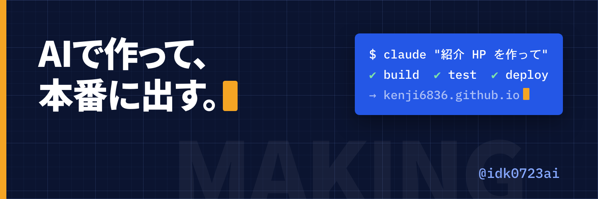
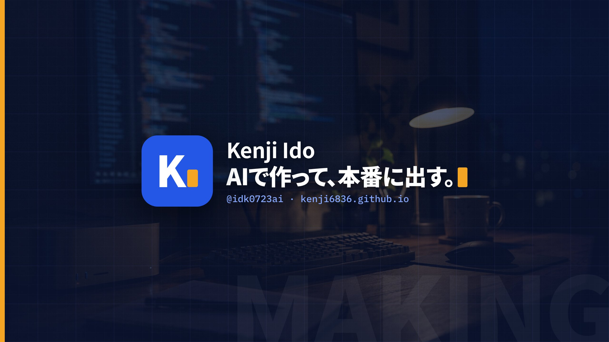
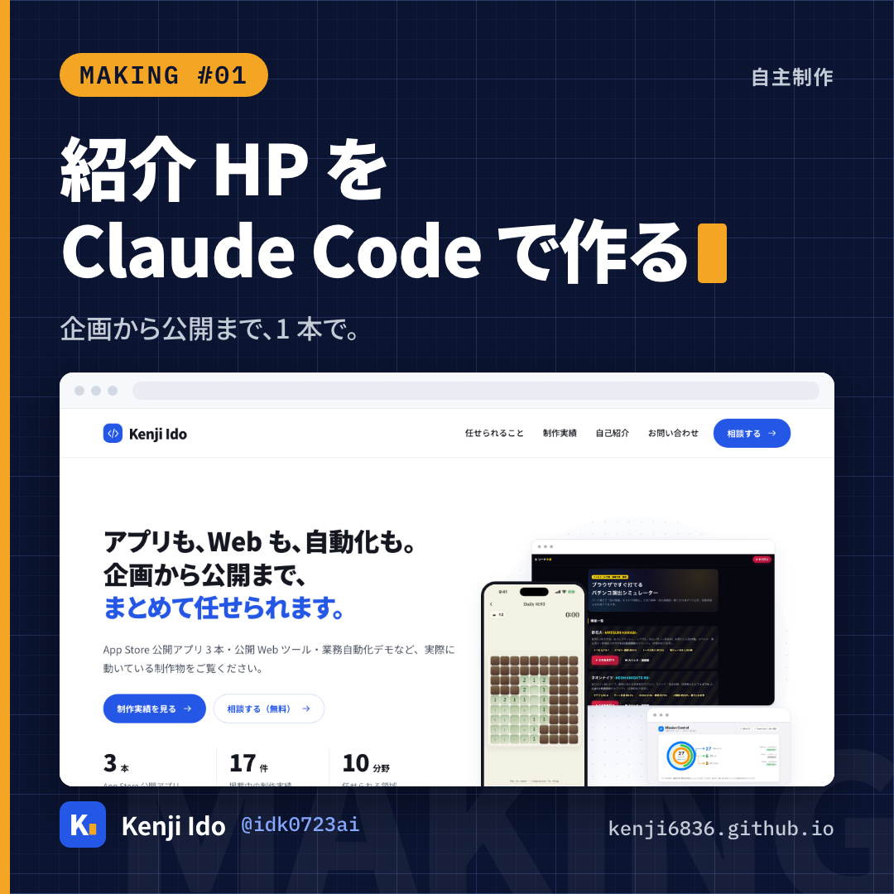
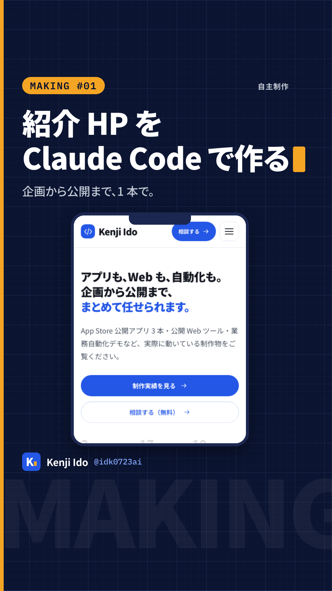

4 SNS 共通。主面＝紺（工房）・副面＝ブランド青。自主制作。
既定／白抜き（青べた上）／紺上。余白 1/4・最小 48px
色を変える
カーソルを消す
回転・変形
青地に青マーク
琥珀は 1 画面 1 か所（カーソル／本番／CTA／左端帯）。紺面は外周 1px＋琥珀帯
見出し・字幕。字間 −2%
名前 700・本文 400
ハンドル・URL・端末・チップ（600）
主面＝紺。副面＝青べたは X 画像投稿・チップ・ボタンだけ
.v-panel に Plex Mono で置く.cap 白 900・紺帯。1080 幅で 64px 以上・1 行 13 字・2 行以内・強調は 1 行 1 つ
em か青面白抜き .k。静止画は 40px 以上.cap.on-white（墨文字・青の左線）



チップ→見出し 2 行→本文→実物スクショ枠→ワードマーク。「自主制作」必須
| SNS | 項目 | 規格 | 判定 | 出典 |
|---|---|---|---|---|
| X | プロフィール画像 | 400×400 推奨 | ✅ | help.x.com ↗ |
| X | ヘッダー | 1500×500 推奨 | ✅ | 同上 |
| YouTube | バナー | 最小 2048×1152・推奨 2560×1440・≤6 MB | ✅ | support.google.com ↗ |
| YouTube | バナー安全域 | 1235×338（最小時）→ 2560 換算 1546×423 | ✅／換算 🟡 | 同上 |
| YouTube | プロフィール画像 | 800×800（慣用） | 🟡 | support.google.com ↗ 数値未取得 |
| フィード | 幅 1080・1.91:1〜4:5（高さ 566〜1350） | ✅ | help.instagram.com ↗ | |
| リール | 1080×1920（9:16） | 🟡 | help.instagram.com ↗ 本文取得不可 | |
| プロフィール画像 | 320×320（慣用） | 🟡 | 公式数値なし | |
| TikTok | プロフィール画像 | 正方形・最小 20×20（表示 250×250 以上の報告） | 🟡 | support.tiktok.com ↗ 本文取得不可 |
| TikTok | 動画 | 1080×1920（9:16） | 🟡 | 慣用値 |